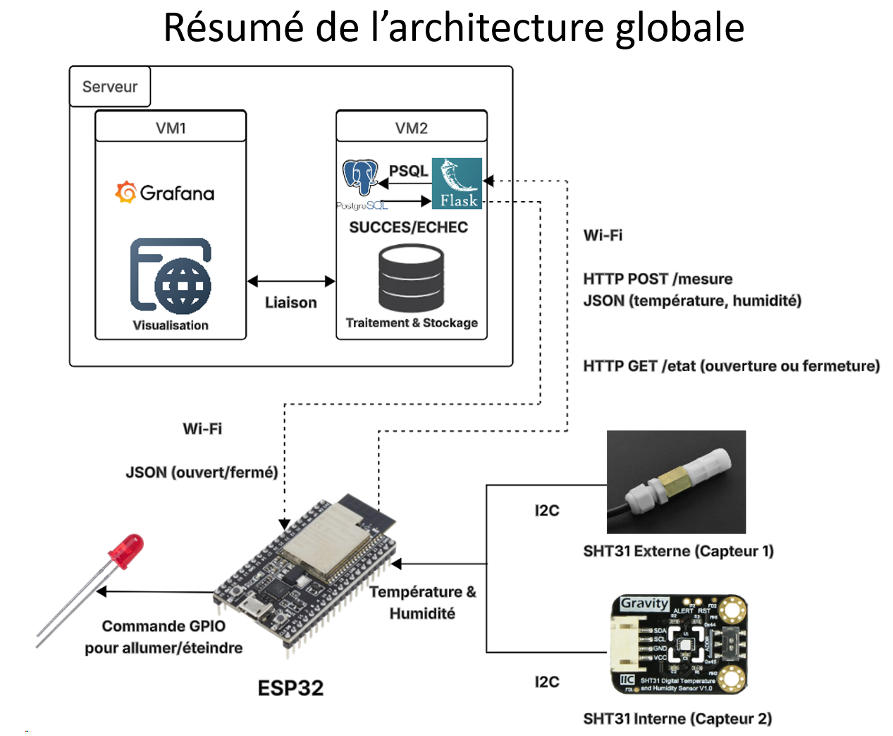
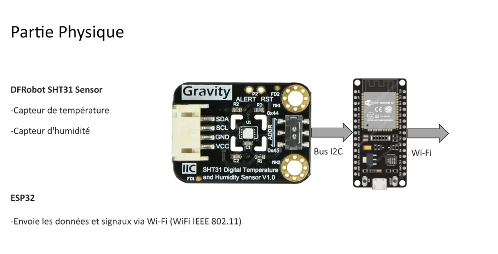
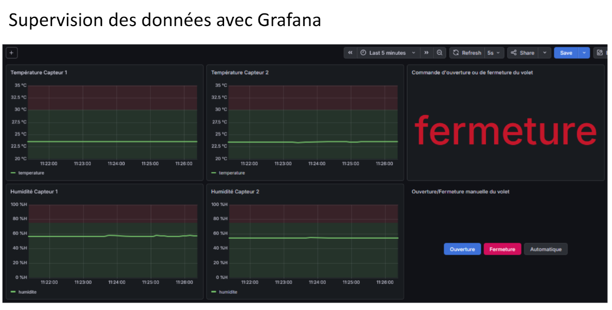
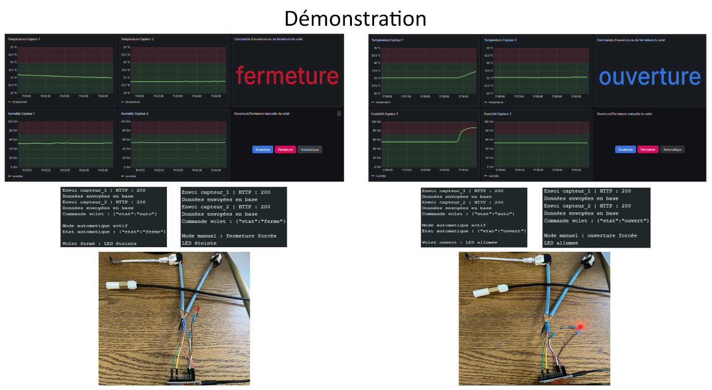

ClimaTek en images
Du montage du capteur jusqu'à l'affichage dans Grafana, ces illustrations montrent les principales étapes du projet.
Du prototype à la supervision
Les étapes principales
L'ensemble relie le matériel, la transmission des mesures, leur stockage et leur consultation dans une seule chaîne.



